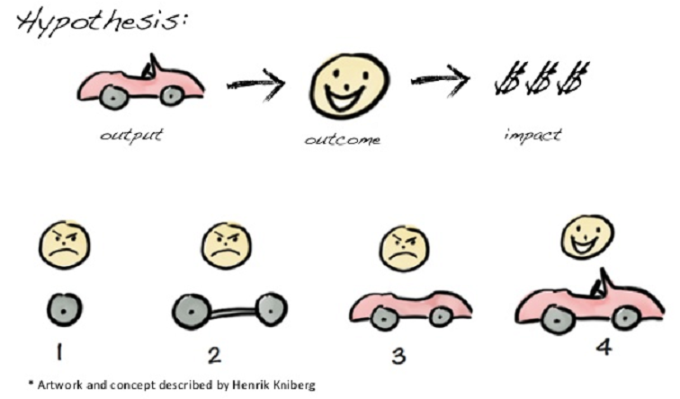
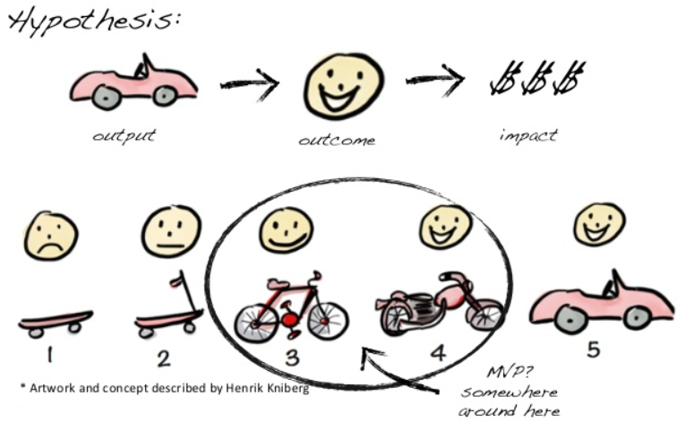

Start with the Essentials and Build Features After Receiving Feedback
One of the key tenets of story mapping is that iteration is essential to any finished product. Failing to iterate demonstrates a willingness to believe that your initial ideas are perfect, and to ignore the necessary feedback that turns your work into something people actually WANT to use. By generating a baseline product and broadly improving on it, rather than developing strong individual elements and snapping them together, you are better able to adapt to change, especially with regards to flaws in the general activity flow.
Two stories of user feedback:
- Dr. Gary Kaplan and Toyota's Blue Yarn - 99% Invisible
- Creators make incorrect assumptions that lead to bad user experiences
- Malcom Gladwell, Howard Moskowitz: Choice, Happiness, Spaghetti Sauce TED Talk
- Users don't know what they want until they're given opportunities to try things out
The Dangers of Incrementation

The Promise of Iteration
